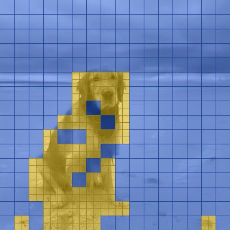
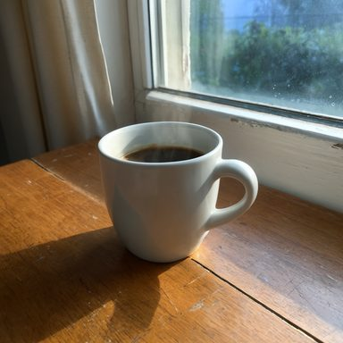
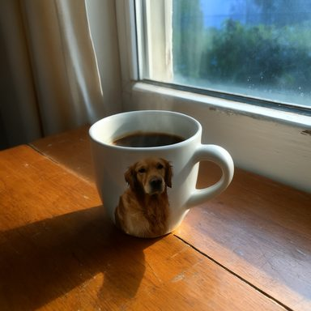
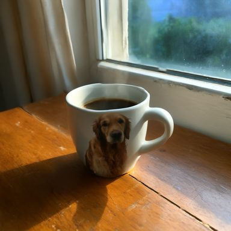
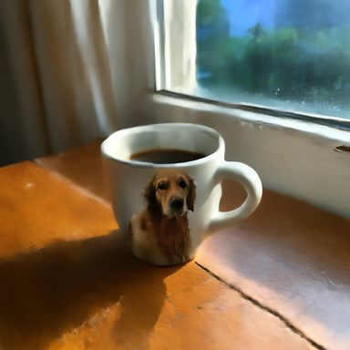
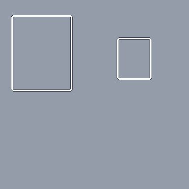
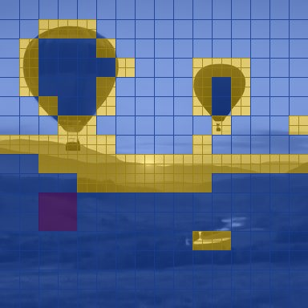

BudgetLatent: Latent-Space Image Generation at Any Token Budget
Unofficial, open-source implementation of BudgetPix's compute-adaptive tokenization, adapted to latent text-to-image models (FLUX.2 [klein] 4B Base, FLUX.2 [klein] 4B, FLUX 3 Image Klein Base and FLUX 3 Image Klein). Thanks to the BudgetPix authors for the method.
Overview
BudgetLatent fine-tunes FLUX.2 [klein] 4B Base, the step-distilled FLUX.2 [klein] 4B, FLUX 3 Image Klein Base and the step-distilled FLUX 3 Image Klein so that the number of tokens is a setting you choose at inference. A quadtree over the latent grid merges the flattest regions into coarser tokens (32, 64 or 128 px instead of 16 px), the transformer runs on the shorter sequence, and small refiners restore the detail inside every merged token. The layout is chosen per image from its content and refreshed during sampling, so the small tokens stay on the detail. At 100% the model runs the dense grid. The step-distilled models keep their few-step samplers without guidance, and every model keeps its editing and reference-image modes at any budget (the FLUX 3 models also their layout boxes).
BudgetLatent Across Budgets
Speed and Memory
Sampling time per image with the optimised inference of the code (--fast: bf16, torch.compile),
at 1024 × 1024: the denoising loop with its layouts, after a warm-up of every budget. The layout is taken from
the noise at step 0 and refreshed from a preview decoded from the running estimate: the 50-step models refresh it
every 4 steps up to step 20, from a 512 px preview; FLUX.2 [klein] 4B refreshes it once, at step 1, and FLUX 3 Image
Klein once, at step 8, each from a 256 px preview, so that the refresh costs little next to their few steps.
Encoding the prompt and the final VAE decode do not depend on the budget and are not included. At batch 1 the peak
memory is mostly the weights, so it hardly moves with the budget; with larger batches it falls with the budget too.
BudgetLatent-FLUX.2-klein-base-4B, one RTX PRO 6000, batch 1, 50 steps, guidance 4.0, layouts every 4 steps up to step 20
| Budget | Tokens | Sampling / image | Speed-up | Peak memory |
|---|---|---|---|---|
| 100% | 4,096 | 10.75 s | 1.00× | 8.6 GiB |
| 90% | 3,685 | 9.77 s | 1.10× | 8.5 GiB |
| 80% | 3,277 | 8.60 s | 1.25× | 8.5 GiB |
| 70% | 2,866 | 7.57 s | 1.42× | 8.4 GiB |
| 60% | 2,458 | 6.57 s | 1.64× | 8.3 GiB |
| 50% | 2,047 | 5.65 s | 1.90× | 8.2 GiB |
| 40% | 1,639 | 4.80 s | 2.24× | 8.2 GiB |
| 30% | 1,228 | 3.81 s | 2.82× | 8.1 GiB |
| 20% | 820 | 2.91 s | 3.70× | 8.1 GiB |
| 10% | 409 | 2.31 s | 4.64× | 8.1 GiB |
BudgetLatent-FLUX.2-klein-4B, one RTX PRO 6000, batch 1, 4 steps, no guidance, layouts at steps 0 and 1
| Budget | Tokens | Sampling / image | Speed-up | Peak memory |
|---|---|---|---|---|
| 100% | 4,096 | 0.42 s | 1.00× | 8.2 GiB |
| 90% | 3,685 | 0.39 s | 1.08× | 8.1 GiB |
| 80% | 3,277 | 0.34 s | 1.24× | 8.1 GiB |
| 70% | 2,866 | 0.31 s | 1.36× | 8.1 GiB |
| 60% | 2,458 | 0.28 s | 1.50× | 8.0 GiB |
| 50% | 2,047 | 0.24 s | 1.79× | 8.0 GiB |
| 40% | 1,639 | 0.20 s | 2.14× | 7.9 GiB |
| 30% | 1,228 | 0.16 s | 2.60× | 7.9 GiB |
| 20% | 820 | 0.14 s | 3.02× | 7.9 GiB |
| 10% | 409 | 0.11 s | 3.86× | 7.9 GiB |
BudgetLatent-FLUX-3-Image-Klein-Base, one RTX PRO 6000, batch 1, 50 steps, guidance 3.5, layouts every 4 steps up to step 20
| Budget | Tokens | Sampling / image | Speed-up | Peak memory |
|---|---|---|---|---|
| 100% | 4,096 | 12.77 s | 1.00× | 10.9 GiB |
| 90% | 3,685 | 11.18 s | 1.14× | 10.7 GiB |
| 80% | 3,277 | 10.00 s | 1.28× | 10.6 GiB |
| 70% | 2,866 | 8.54 s | 1.50× | 10.5 GiB |
| 60% | 2,458 | 7.36 s | 1.74× | 10.4 GiB |
| 50% | 2,047 | 6.19 s | 2.06× | 10.2 GiB |
| 40% | 1,639 | 4.82 s | 2.65× | 10.1 GiB |
| 30% | 1,228 | 3.75 s | 3.41× | 10.0 GiB |
| 20% | 820 | 2.86 s | 4.47× | 9.9 GiB |
| 10% | 409 | 1.68 s | 7.59× | 9.9 GiB |
BudgetLatent-FLUX-3-Image-Klein, one RTX PRO 6000, batch 1, 16 steps, no guidance, layouts at steps 0 and 8
| Budget | Tokens | Sampling / image | Speed-up | Peak memory |
|---|---|---|---|---|
| 100% | 4,096 | 2.06 s | 1.00× | 10.2 GiB |
| 90% | 3,685 | 1.79 s | 1.15× | 10.2 GiB |
| 80% | 3,277 | 1.62 s | 1.27× | 10.1 GiB |
| 70% | 2,866 | 1.46 s | 1.42× | 10.1 GiB |
| 60% | 2,458 | 1.20 s | 1.72× | 10.0 GiB |
| 50% | 2,047 | 1.03 s | 2.01× | 9.9 GiB |
| 40% | 1,639 | 0.83 s | 2.49× | 9.9 GiB |
| 30% | 1,228 | 0.68 s | 3.02× | 9.8 GiB |
| 20% | 820 | 0.52 s | 3.95× | 9.7 GiB |
| 10% | 409 | 0.35 s | 5.95× | 9.7 GiB |
Editing, References and Layout Boxes at Any Budget
The fine-tuned models keep what their base models do with reference images: editing an image from an instruction, combining several reference images into a new one, and, with FLUX 3 Image Klein Base and FLUX 3 Image Klein, placing objects in layout boxes given in the prompt. The budget applies to the generated image only: the reference images stay at full size (4,096 tokens for each 1024 × 1024 reference), and the layout is chosen for the new image as in text-to-image generation. Below, FLUX 3 Image Klein Base with the same noise at every budget; under each result, its budget and its speed-up against 100%.
Edit: “put a red bandana around the dog's neck”

Two references: “print the dog from the second image onto the mug”





Layout boxes: “hot-air balloons over a green valley at sunrise”


Reference images, instructions and boxes from Black Forest Labs' FLUX 3 Image Klein examples; the model is given each example's full prompt, of which the line above each row is the short instruction.
Speed-up at 10% of the tokens against 100%, one RTX PRO 6000, batch 1, 1024 × 1024
| Model | Text to image | Edit, 1 reference | 2 references | Layout boxes |
|---|---|---|---|---|
| FLUX.2 [klein] 4B Base | 4.43× | 1.90× | 1.54× | – |
| FLUX.2 [klein] 4B | 2.59× | 1.74× | 1.48× | – |
| FLUX 3 Image Klein Base | 7.29× | 2.40× | 1.82× | 5.82× |
| FLUX 3 Image Klein | 4.52× | 1.95× | 1.53× | 3.97× |
Sampling time per image with --fast after a warm-up (the faster of cuBLAS and cuBLASLt; the
step-distilled models: best of 3 runs), each model with its own sampler, on Black Forest Labs' examples: a man walking with his dog (text to image), the bandana (an edit, one reference), the dog printed
onto the mug (two references) and the hot-air balloons (layout boxes); FLUX 3 Image Klein Base and FLUX 3 Image Klein
are given the examples' detailed captions, FLUX.2 [klein] the short instructions. The text-to-image column comes from
the same runs, so it differs from the tables above. FLUX.2 [klein] has no box mode; an edit with
layout boxes runs as fast as a plain edit (2.41× and 1.94× at 10% for
FLUX 3 Image Klein Base and FLUX 3 Image Klein).
One model pass at 10% of the tokens against 100%, by the number of references
| Model | 0 references | 1 reference | 2 references | 4 references | 10 references |
|---|---|---|---|---|---|
| FLUX.2 [klein] 4B Base | 4.92× | 1.91× | 1.53× | 1.32× | 1.15× |
| FLUX.2 [klein] 4B | 4.43× | 1.89× | 1.53× | 1.30× | 1.15× |
| FLUX 3 Image Klein Base | 7.89× | 2.13× | 1.63× | 1.36× | 1.17× |
| FLUX 3 Image Klein | 6.05× | 1.95× | 1.51× | 1.32× | 1.14× |
Timing only, with 1024 × 1024 references at full size: the more references, the larger the share of each pass that does not depend on the budget, and the smaller the speed-up.
BibTeX
@article{kara2026budgetpix,
title={BudgetPix: Compute-Adaptive Tokenization for Pixel-Space Image Diffusion},
author={Ozgur Kara and Yujia Chen and Daniel Watson and David Forsyth and James Matthew Rehg and Wen-Sheng Chu and Du Tran},
journal={arXiv preprint arXiv:2610.12307},
year={2026}
}
@misc{budgetany2026,
title={BudgetAny: Generative Models at Any Compute Budget},
author={Ozgur Kara},
year={2026},
howpublished={\url{https://budgetany.github.io}}
}
License
The code is released under the MIT License. The weights follow the license of their base model: Apache-2.0 for BudgetLatent-FLUX.2-klein-base-4B and BudgetLatent-FLUX.2-klein-4B, and Black Forest Labs' FLUX Kommunity License (non-commercial use of the model) for BudgetLatent-FLUX-3-Image-Klein-Base (its terms) and BudgetLatent-FLUX-3-Image-Klein (its terms).
Acknowledgements
Thanks to the BudgetPix authors for the method, and to Black Forest Labs for releasing FLUX.2 [klein] 4B Base, FLUX.2 [klein] 4B, FLUX 3 Image Klein Base and FLUX 3 Image Klein, which BudgetLatent builds on. BudgetLatent is not affiliated with or endorsed by Black Forest Labs.
We acknowledge the compute support of the Health Care Engineering Systems Center within the Coordinated Science Lab at UIUC.